ROTA INTELIGENTE DE TRANSPORTES
Plataforma estratégica que converte dados dispersos de câmeras ao vivo, monitoramento de trânsito, rodovias, caravanas, malha aérea (RIT Fly), clima e custos em inteligência preditiva 360° — protegendo equipes em campo, garantindo pontualidade artística e otimizando recursos 24x7.
Central de Câmeras & Ocorrências Viárias
Centro de Comando com mais de 4.297 câmeras ao vivo em alta definição, cruzamento geoespacial instantâneo de incidentes (COR-Rio, CET-SP, OTT e Fogo Cruzado) e recomendação preditiva da IA Operacional RIT.
+4.297 Câmeras Ativas & Visualizador In-App
Streaming contínuo de concessionárias, COR-Rio e CET-SP com abertura direta na plataforma e diagnóstico automático de saúde das fontes.
Motor Preditivo IA + Risco (OTT & Fogo Cruzado)
Sobreposição georreferenciada de ocorrências policiais, disparos, interdições e manchas de calor para proteger equipes de reportagem e elenco.
Busca Inteligente por Raio (1 km a 5 km) & 5 Regionais
Identificação imediata das câmeras mais próximas de qualquer rota crítica (ex.: Estúdios Globo ↔ Jardim Botânico) e alternância por UF.
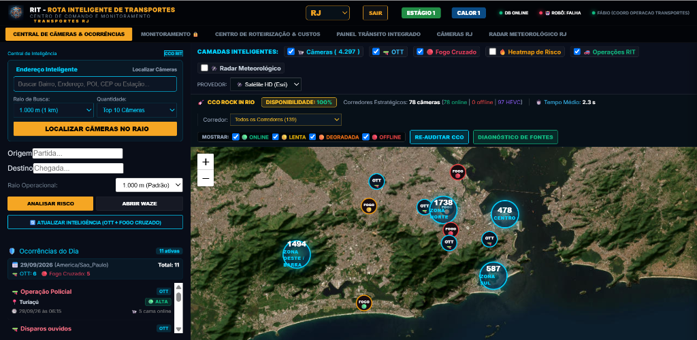
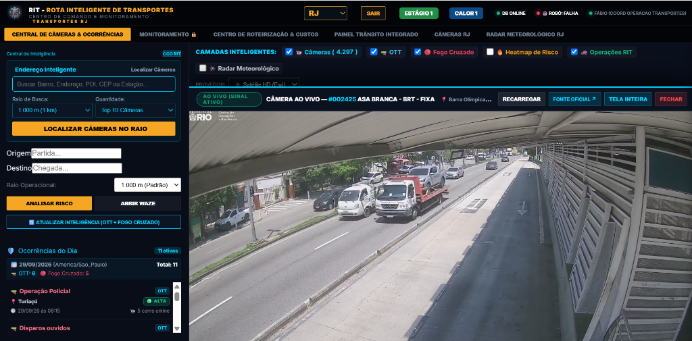
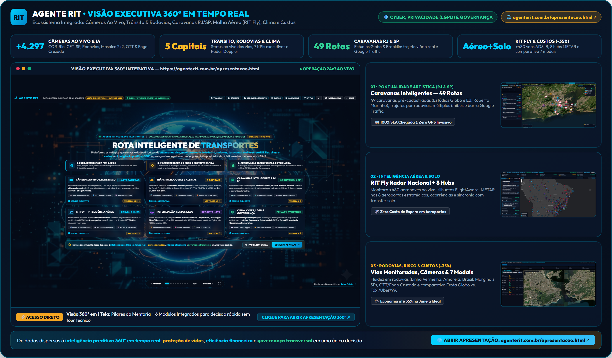
Monitoramento de Trânsito, Rodovias & RIT Alerta
Inteligência autônoma de trânsito e rodovias em tempo real, com painel lateral de vias monitoradas, 7 KPIs interativos com drill-down e telemetria ativa nas 5 capitais operacionais da Globo (RJ, SP, BSB, REC e BH).
Monitoramento de Rodovias & Corredores Críticos
Acompanhamento ao vivo de Av. Brasil, Presidente Dutra, Linha Vermelha, Linha Amarela, Transolímpica, Ponte Rio-Niterói, Marginais Tietê/Pinheiros, Castelo Branco, EPIA (BSB), BR-101 (REC) e Anel Rodoviário (BH).
7 KPIs Executivos com Drill-Down & Retenção em Minutos
Índice de mobilidade da praça, retenção média (+min), velocidade média (km/h), bloqueios críticos, vias afetadas e saúde das fontes públicas.
Sincronização Regional Instantânea (RJ, SP, BSB, REC e BH)
Alternância fluida entre as 5 capitais com reposicionamento automático do mapa, camada de trânsito e alertas climáticos integrados.
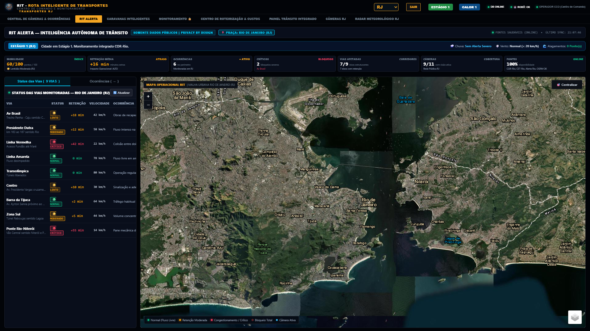
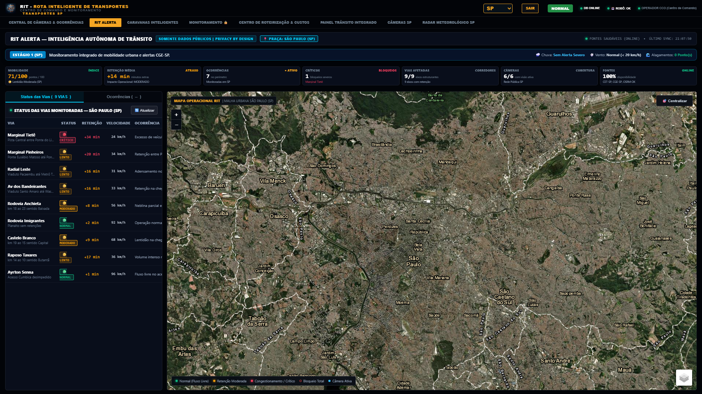
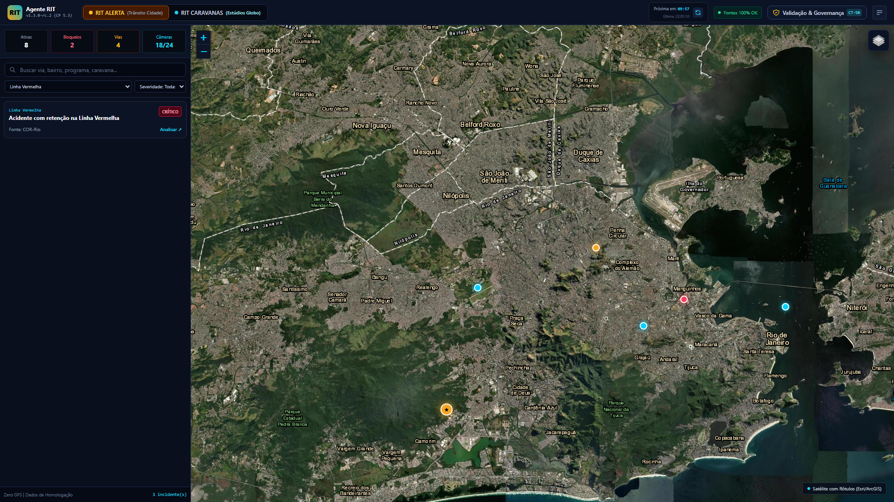
| Rodovia / Corredor Viário | Status Operacional | Tempo Atual | Tempo Ref. | Variação |
|---|
Painel Trânsito Integrado & Rodovias
Visão executiva consolidada dos grandes eixos rodoviários, pontes, túneis e corredores metropolitanos, integrando concessionárias e órgãos de trânsito para antecipar gargalos logísticos.
Monitoramento Integrado de Concessionárias & Eixos Expressos
Consolidação de fluxos rodoviários e acessos estratégicos aos Estúdios Globo, Jardim Botânico, Berrini/Brooklin e regionais.
Camada de Fluidez em 6 Níveis Cromáticos
Leitura visual imediata (Livre, Moderado, Lento, Intenso, Parado/Bloqueado) com medição contínua de velocidade e retenção.
Suporte Decisório Proativo para Saídas de Frota
Permite ajustar rotas antes da partida dos veículos, reduzindo atrasos em coberturas jornalísticas, gravações e grandes eventos.
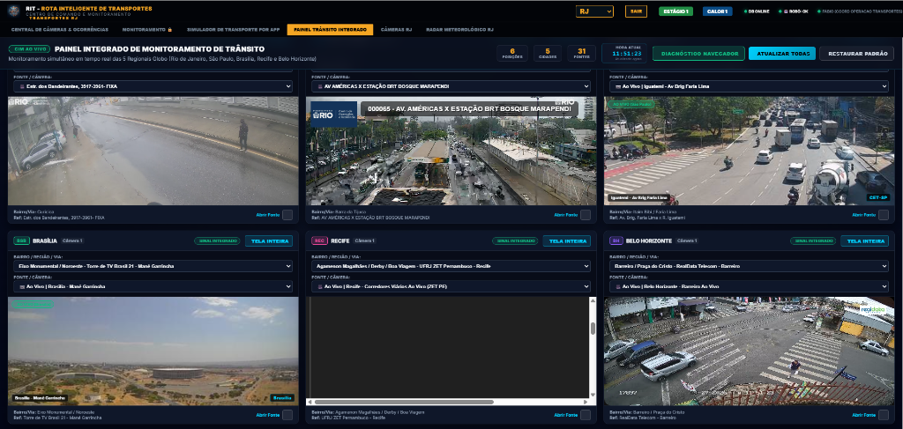
Câmeras em Tempo Real — Mosaico 2x2
Matriz de monitoramento visual simultâneo 2x2 de alta resolução, permitindo acompanhar quatro rodovias ou corredores críticos ao mesmo tempo sem alternar telas.
Videowall Quádruplo Sincronizado
Exibição simultânea de 4 feeds ao vivo de alta definição das principais vias expressas, túneis e pontes.
Seleção Rápida de Rodovias e Eixos Críticos
Acesso imediato a Linha Amarela, Linha Vermelha, Ponte Rio-Niterói, Av. Brasil, Transolímpica, Lagoa-Barra e Aterro.
Confirmação Visual Imediata do Cenário
Validação visual em segundos para verificar liberação de pista, condições de chuva ou impacto real de acidentes.
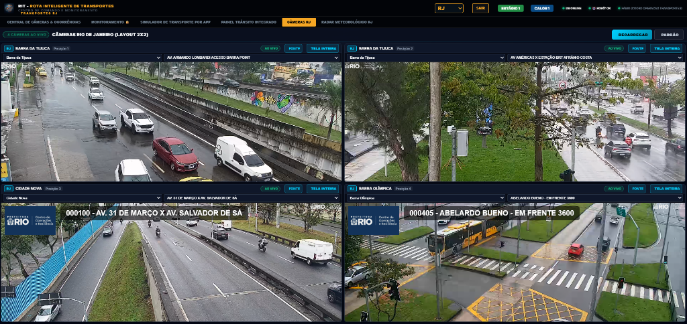
Radar Meteorológico & Prevenção Climática
Monitoramento meteorológico contínuo com radar Doppler, manchas de precipitação e alertas de alagamento (COR-Rio e CGE-SP), aliado a uma arquitetura construída sob estrita governança corporativa.
Radar Doppler em Tempo Real & Estágios Operacionais
Acompanhamento do deslocamento de núcleos de chuva severa, ventos fortes e estágios de atenção da cidade.
Prevenção Logística de Bolsões d'Água e Interdições
Antecipação de pontos críticos de alagamento para desvio seguro de equipes de externa, unidades móveis e colaboradores.
Articulação Transversal: Cyber, Privacidade (LGPD) & Governança
Zero coleta de GPS invasivo de motoristas, proteção de dados pessoais (Privacy by Design), controle de acesso RBAC e auditoria íntegra.
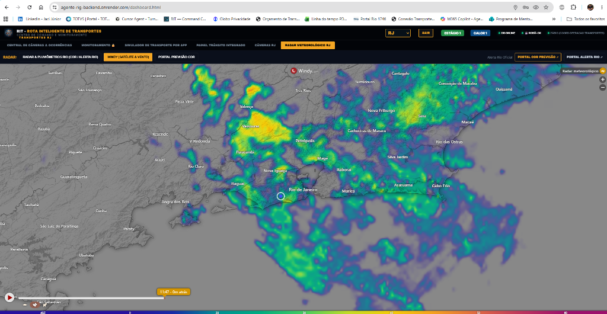
Centro de Roteirização & Custos Multimodal
Motor de decisão financeira que compara rotas entre a Frota Própria Globo e 6 modais parceiros/aplicativos, recomendando a opção de melhor custo-benefício com curva preditiva de 24h.
Comparativo de 7 Modais com Score de Eficiência (97/100)
Simulação instantânea entre Frota Própria Globo, Cooperativa, Táxi, UberX, 99Pop, Uber Comfort e Uber Black ponderando custo, tempo e risco.
Projeção 24h & Economia de até 35% na Janela Ideal
Curva horária que identifica janelas fora de pico com redução de até 35% no custo e -20 minutos de exposição no trânsito.
Processamento em Lote (XLSX), Pedágios & Pegada de CO₂
Importação de planilhas operacionais em lote, auditoria automática de pedágios no trajeto e cálculo de emissões de CO₂ por viagem.
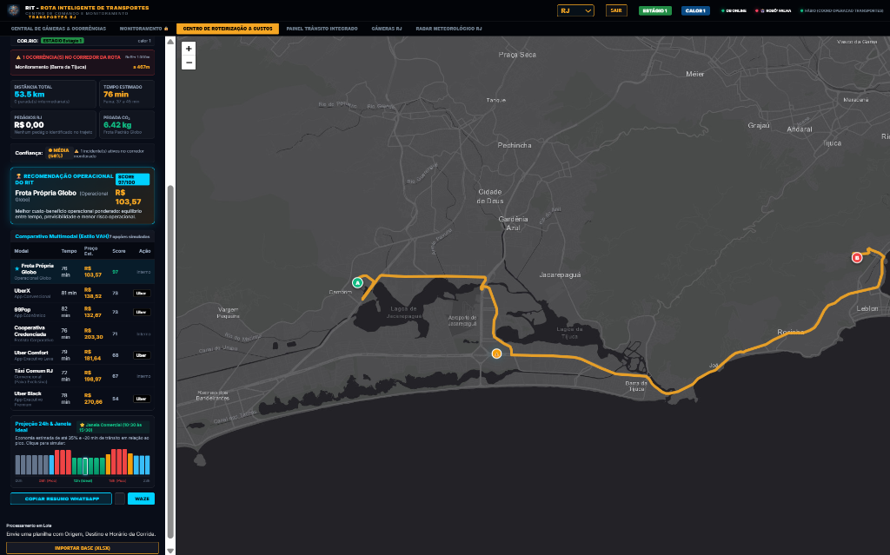
Caravanas Inteligentes RJ + SP
Gestão preditiva de caravanas de auditório para os Estúdios Globo (Curicica - RJ) e Edifício Jornalista Roberto Marinho (Brooklin - SP), com 49 rotas pré-cadastradas, trajetos reais por rodovias e barra Google Traffic.
49 Caravanas Pré-Cadastradas RJ + Programas RJ/SP
Seleção imediata de 49 origens do RJ e rotas de SP, vínculo por programa (Domingão, Caldeirão, Altas Horas, Encontro, Mais Você ou texto livre) e múltiplos ônibus simultâneos no mapa.
Trajetos Viários Reais, Horário de Saída & Sentido (Ida/Volta)
Geometria real das rodovias, sincronização do seletor de horário de partida e sentido (Rumo à Globo ou Retorno) com recálculo automático da chegada com trânsito.
Barra Google Maps Traffic & Camadas Limpas no Mapa
Barra inferior de fluidez por trecho, controle independente de camadas (Roteiro, Ocorrências, Câmeras, OTT e Fogo Cruzado) e operação 100% livre de GPS invasivo.
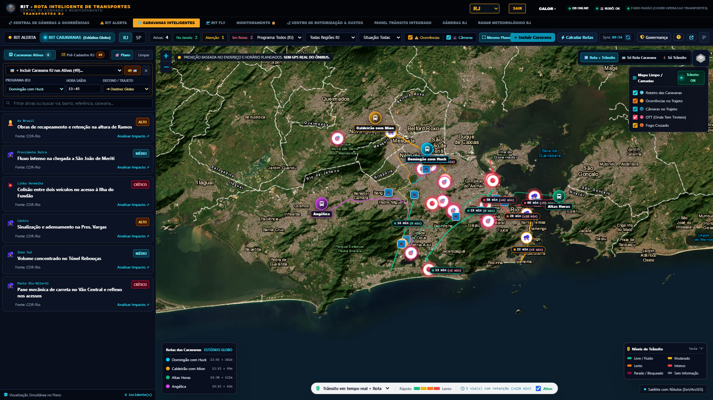
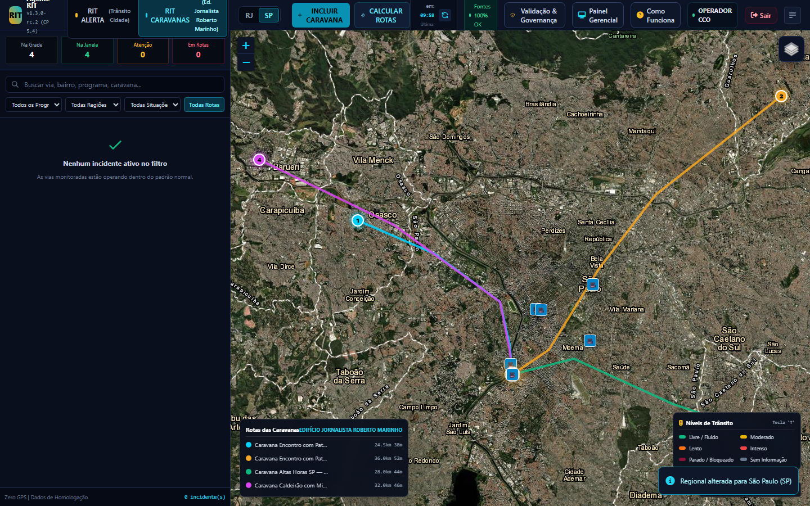
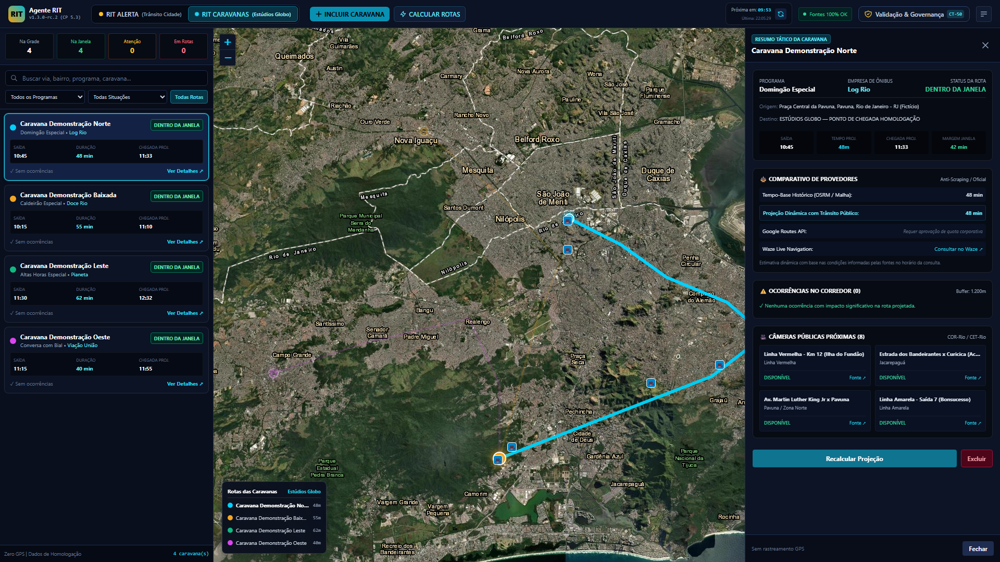
Como Funciona o RIT FLY
Plataforma corporativa que unifica o rastreamento em tempo real da malha aérea nacional (ADS-B com rotas IATA reais), meteorologia METAR de 8 aeroportos estratégicos, assistente RIT Fly AI e sincronia com o transporte terrestre em solo.
1. Radar ADS-B Nacional
+480 aeronaves ao vivo com silhuetas FlightAware orientadas pela proa e failover triplo.
2. Ocorrências Consolidadas
Painel unificado de alertas de clima/METAR, atrasos de voos e pressão nos hubs.
3. 8 Hubs & METAR Ao Vivo
SDU, GIG, CGH, GRU, VCP, BSB, CNF e REC com boletins METAR e quadro "Voos do Dia".
4. Filtro Cia & 6 Mapas
Filtro rápido (GOL, LATAM, AZUL, Executivos, Helicópteros) e 6 camadas de mapa.
5. Assistente RIT Fly AI
Chatbot em linguagem natural para consultar clima nos aeroportos, atrasos e riscos.
6. Sincronia Aéreo-Solo
Reprogramação preditiva da frota terrestre em caso de atraso ou antecipação do voo.
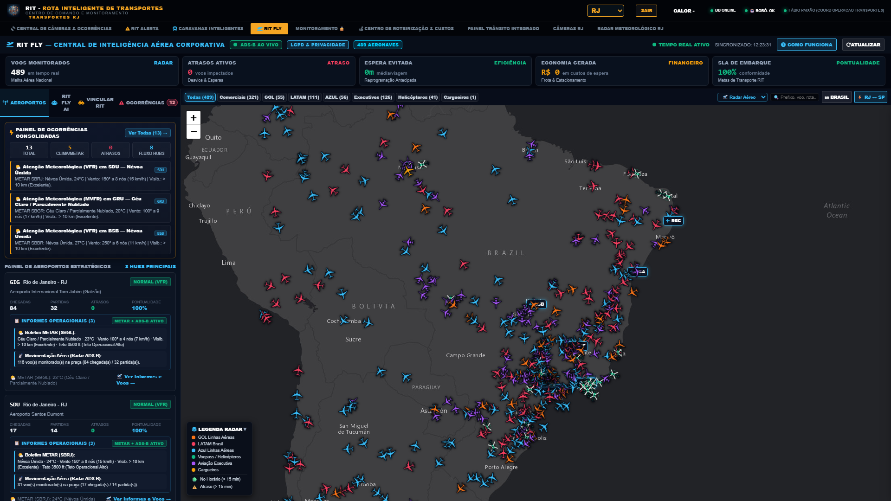
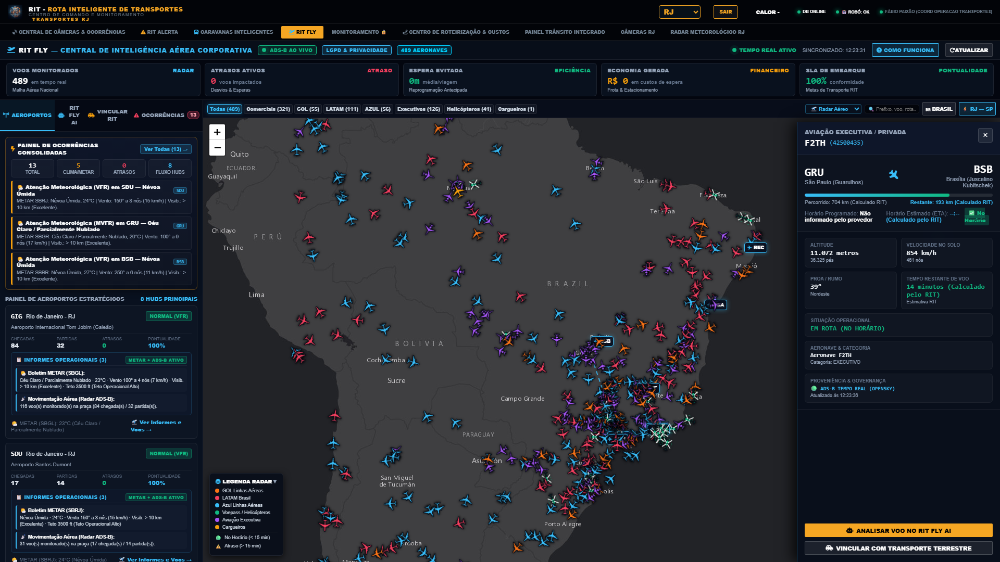